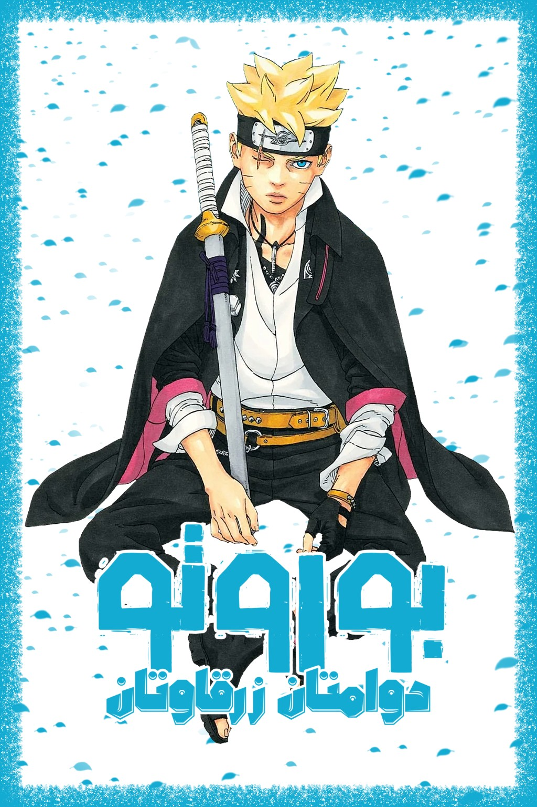

BORUTO • TWO BLUE VORTEX
بوروتو: دوامتان زرقاوتان
BORUTO -TWO BLUE VORTEX-
بعد أن تم تعديل ذكريات الجميع، يجد بوروتو نفسه مطارداً من قريته. وبعد هروبه مع ساسكي، ما المستقبل الذي ينتظر بوروتو...؟
CHAPTERS
قائمة الفصول
اختر الفصل وابدأ القراءة مباشرة.
⌕
ABOUT
معلومات المانجا
القصة
بعد أن تم تعديل ذكريات الجميع، يجد بوروتو نفسه مطارداً من قريته. وبعد هروبه مع ساسكي، ما المستقبل الذي ينتظر بوروتو...؟
الكاتب
Masashi Kishimoto
الرسام
Mikio Ikemoto
الاسم الياباني
BORUTO -TWO BLUE VORTEX-
التصنيفات